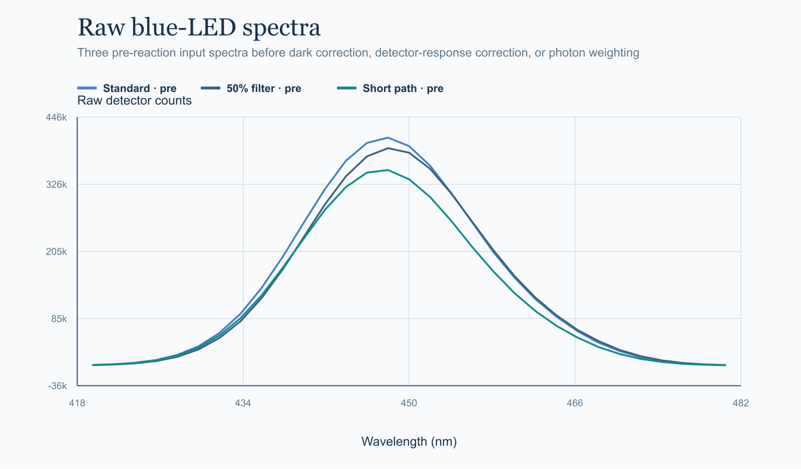

Actinometry inputs
Ferrous calibration, ferrioxalate reference values, and pre/post actinometer measurements.
 FrontierChallenge: A scientific workflow benchmark
FrontierChallenge: A scientific workflow benchmarkPhotochemistry · Hard
Connect ferrioxalate actinometry, LED emission, reaction absorbance, quantitative assays, dark controls, and an independent condition without mixing calibration, training, or validation roles.

Ferrous calibration, ferrioxalate reference values, and pre/post actinometer measurements.
Raw LED detector counts and time-resolved reaction absorbance with blank measurements.
Replicate substrate, target-product, and side-product concentrations across declared time points.
Metadata distinguishes four training conditions, one independent validation condition, and a dark control.
Fit the ferrous assay and reconcile pre/post actinometry with the lamp spectrum and ferrioxalate response.
Combine detector-corrected emission with time-resolved reaction absorption and preserve interval-level photon accounting.
Aggregate replicate assays, apply dark-control corrections, and retain condition-specific volume, path length, and timing.
Pool only training conditions, then use the held-out condition solely for independent validation.